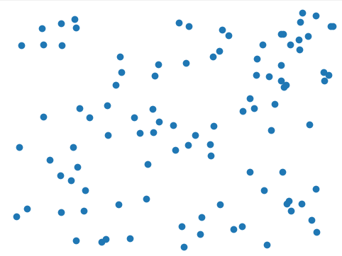

The goal of this project is to infinitely generate a landscape with a set of arbitrary points.
Typically, this is done with a noise function on a grid.
You would generate a uniform grid of points like this (picture made with matplotlib):
Then, you would use some function or input to generate the height of a terrain.
This is a very quick and easy way to get good results, especially with functions that make really good terrain approximations,
like Perlin noise or some variant of Fractional Brownian Motion
("fBm", see here).
However, what if your underlying points are not uniformly spaced? For example:

In the grid exmaple, it was pretty easy to make a nice, efficient mesh from those points.
But in the more random one, that's not true anymore.
Admittedly, there's not really an application where you are building a terrain mesh and your data is weirdly distributed like this, so there's not really much of a point in recreating this project.
If all you want to do is make a pretty terrain, then feel free to stop reading here!
Since a mesh is (usually) a collection of triangles, we can equivalently view the problem "creating a mesh for our terrain" as "triangulating the points that deifne our terrain".
In this sense, the best mesh we can generate will be one with as few triangles as possible, or at least one that tends to minimize tiny triangles.
I've chosen the Delaunay triangulation, as it does precisely that.
In order to construct the Delaunay triangulation of a set of points, we need to pick an algorithm.
The big contenders are the incremental construction that directly produces a Delaunay triangulation, or constructing a Voronoi diagram, the dual of a Delaunay triangulation, and constructing the triangulation quickly from the dual (for example, by traversing the half-edges of a DCEL Voronoi diagram to find the edges of our triangles).
This picture from David Mount should give a good idea of what's going on here, where the blue is the Voronoi diagram, and the black is the triangulation:
It's worth noting that we can ignore the "height" of the points, and find this triangulation in the plane.
This gives us a good reason to pick the Voronoi construction: we can randomly generate points in 2D, and use features of the Voronoi diagram (e.g. site area) to help determine our heights!
The mathematically well-defined fBm from above typically takes a noise function/random distribution of points as an input.
Here is an example of a grid terrain which uses fBm with white noise to generate heights:
However, the one we program can take anything.
We can feed it site area to influence heights, and since the sites are randomly generated, the result is very similar in a practical sense to a random distribution.
Another reason to choose the Voronoi construction is the "infinite" part of the landscape.
An algorithmically relevant part of the incremental construction is that we insert points in a random order.
If we are creating new points as we go along, either this assumption is invalidated, or we have to re-make the mesh every time we generate new terrain, neither of which is particularly efficient.
Instead, if we make a Voronoi diagram with, say, Fortune's algorithm, then adding new points is easy as long as we maintain the sweep line and beach line status from before.
Although this diagram is not perfect, imagine that our sweep line finished where the red line is, and then we generated more points after:
Then, we just have to continue running Fortune's algorithm, as if our point set was always larger.
With all of that out of the way, let's consider the full algorithm. At a very high level, this algorithm looks something like this:
So, what does this kind of terrain look like? Here's a few pictures:
And honestly? I kinda hate it. It's really ugly, so I'm going to leave up a demo with a uniform grid that makes prettier terrains using Perlin noise. The weird, pointy mountains make some amount of sense.
If sites with a greater area influnce height (I made them tend to be taller when the sites have bigger areas), then whenever a point has a larger site, it will pop out into a large mountain; conversely, denser sections of points will be little valleys that are hard to make out with the bigger mountains on the side.
It looks... weird. So instead, enjoy a good-looking terrain! Thanks to this Perlin noise library for making this typical terrain demo. I can safely advise people to not follow this method that I spent a semester building...
The controls: Press W or click, and you will go forward.